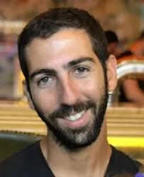

נחל עוז
פיורנטינו אילן ז"ל
רבש"ץ נחל עוז, אב ואיש קהילה; רבש"צ נחל עוז
סיפור חיים
אילן פיורנטינו ז"ל, בנם של נורית ויהודה, נולד בה' בכסלו תשמ"ה, 29 בנובמבר 1984, בקיבוץ נחל עוז. הוא היה אח לקרן, שוהם, גיל־לי, עודד ויפעת.
אילן גדל והתחנך בנחל עוז שבנגב המערבי, קיבוץ הגובל בצפון רצועת עזה. הוא למד בבית החינוך האזורי "שער הנגב", והיה ילד חייכן, נעים הליכות ואהוב על הבריות. מכריו סיפרו על נער רגוע וצנוע, בעל חוש הומור, לב זהב וחיוך שגרם לאנשים לרצות להיות בקרבתו.
מגיל צעיר היה אילן ספורטאי בנשמתו. הוא אהב כדורגל וכדורסל, שיחק שעות ארוכות עם אחיו וחבריו, והיה אוהד מושבע של מכבי תל אביב. בילדותו העריץ את שחקן הכדורגל אבי נמני, ובשל הדמיון ביניהם דבק בו הכינוי "נמני". לצד מכבי תל אביב אהב גם את פיורנטינה, קבוצת הכדורגל של פירנצה, שממנה הגיעה במקור משפחתו.
משפחה הייתה עבורו ערך עליון. אילן היה בן מסור, אח אוהב ותומך, ובהמשך בעל ואב מלא אהבה. הוא אהב לבלות עם הוריו, אחיו והמשפחה המורחבת, לטייל בשדות הקיבוץ, וליהנות מהרגעים הפשוטים של בית, קהילה וטבע.
בשנת 2003 התגייס לצה"ל ושירת כלוחם וכחובש. הוא היה אהוב על מפקדיו וחבריו ליחידה, וביצע כל משימה במסירות ובמקצועיות.
לאחר שחרורו עבד כמה חודשים ברפת, ובהמשך עבר לתל אביב. כעבור שנתיים חזר לנחל עוז כדי להדריך את קבוצת הנעורים בקיבוץ. חניכיו סיפרו על מדריך מסור, אכפתי ואהוב, שקיבל אותם תמיד בשמחה ובחיוך.
את שרון הכיר כאשר הגיעה להתגורר בנחל עוז בשנת 2009 כסטודנטית במכללת ספיר ועסקה בחינוך. תחילה נרקם ביניהם קשר חברי, ובהמשך, לאחר שאילן חזר לקיבוץ, ניצתה ביניהם אהבה. השניים נישאו וקבעו את ביתם בנחל עוז. במהלך השנים נולדו להם שלוש בנות: נועם, ליבי ודורון.
אילן היה אב למופת. שרון תיארה אותו כ"אבא במאתיים אחוז". הוא הרעיף אהבה על בנותיו, היה מעורב בחייהן, לקח אותן מדי יום לגן, בילה איתן בכל הזדמנות, והלך איתן למשחקי כדורגל.
אילן היה קיבוצניק בכל רמ"ח איבריו. הוא אהב את נחל עוז בכל ליבו וראה בתרומה לקהילה שליחות. הוא הצטרף לכיתת הכוננות של הקיבוץ, שימש כסגן רבש"ץ, ובשנת 2015 התמנה לרבש"ץ הקיבוץ. בתפקיד זה פעל באומץ, במקצועיות, בנעימות, בצניעות, ברצינות ובקור רוח.
הוא היה עמוד תווך בקהילת נחל עוז. בכל משימה, קטנה כגדולה, היה הראשון להירתם - מכיבוי שרפות ועד ליווי משפחות, מסיוע לחיילים ועד תמיכה בתושבים בתקופות מתוחות. בשנת 2021 נבחר לרבש"ץ מצטיין מטעם מפקד מערך הגנת הגבולות וקיבל את תואר "מצטיין ההתיישבות".
בהסכת "לשמור על הבית" של רדיו קול הנגב, שליווה אותו בתפקידו כרבש"ץ, סיפר אילן: "הקהילה היא המשפחה שלך, אין כמו לעשות בשביל מישהו אחר ולראות את התודה. זה הזמן שלי להחזיר לקהילה."
אילן היה אדם של עשייה ונתינה אינסופית. הוא עזר לכולם, מצעירים ועד מבוגרים, ותמיד היה הטלפון הראשון כאשר נזקקו לעזרה. רעייתו שרון כינתה אותו "האקמול של הקיבוץ" - מי שבמאור פניו, בחיוכו ובטוב ליבו ידע להרגיע חששות ולתת ביטחון.
הוא התנדב בארגון "ידידים", היה מעורב בפעילויות נוער בקיבוץ, בבניית סוכות בגני הילדים, בסיורים לאורך הגדר ובכל משימה קהילתית שנדרשה. תמיד נענה, תמיד הגיע, תמיד נתן מכל הלב.
בשעות הפנאי אהב מוזיקה והופעות, במיוחד את להקת "הדג נחש". הוא שיחק כדורגל בנבחרת ותיקי שער הנגב, אהב לצפות במשחקים, לשתות קפה בגינה, לשוחח עם חברים על כוס בירה, לצאת לטיולי טרקטורונים ולעשות סקי. הוא היה אדם אופטימי, מלא שמחת חיים, שידע להעריך כל יום.
שבעה באוקטובר והימים שאחריו בבוקר שבת, שמחת תורה תשפ"ד, 7 באוקטובר 2023, חדרו מחבלים לקיבוץ נחל עוז במסגרת מתקפת הטרור הרצחנית על יישובי עוטף עזה.
באותו בוקר שהה אילן בביתו עם שרון ושלוש בנותיהם. עם תחילת המתקפה נקלע אריאל זוהר בן ה־13, בן הקיבוץ, לסכנה בעת שיצא לריצת בוקר. אמו, יסמין זוהר, התקשרה אל אילן וביקשה את עזרתו. אילן, רבש"ץ הקיבוץ, לא היסס לרגע. הוא יצא אל קו האש, הגיע אל אריאל וחילץ אותו לביתו, אל הממ"ד שבו שהו שרון ובנותיהם. באותן שעות שהו הוריו של אריאל, יניב ויסמין, ואחיותיו קשת ותכלת, בממ"ד ביתם. כשש שעות לאחר תחילת המתקפה פרצו מחבלים לבית המשפחה ורצחו את כל בני המשפחה ששהו בממ"ד. גם סבו של אריאל, חיים ליבנה בן ה־87, נרצח בביתו בנחל עוז. במעשה זה הציל אילן את חייו של אריאל.
לאחר שחילץ את אריאל, קיבל אילן התרעה על פריצה בגדר הגבול ויצא שוב, במסגרת תפקידו כרבש"ץ, כדי להגן על הקיבוץ. הוא התקשר לסגנו וביקש ממנו להגיע במהירות לרכב הממוגן של כיתת הכוננות, והקפיץ כוח נוסף ששהה בקיבוץ.
אילן התגורר סמוך לשער האחורי של נחל עוז, שממנו נכנסו ראשוני המחבלים. הוא עמד מולם לבדו ונלחם בהם, בזמן שהתושבים הסתגרו בבתיהם ובמרחבים המוגנים. כל רגע שבו הצליח לעכב את המחבלים נתן לעוד משפחה זמן להינצל.
כאשר שרון התקשרה אליו, ענה לה: "אני בקרב". מאז נותק עימו הקשר. אילן נלחם בעוז רוח ובגבורה עילאית מול המחבלים, עד שנורה למוות במהלך הלחימה.
רב־סמל מתקדם אילן פיורנטינו נפל בקרב בכ"ב בתשרי תשפ"ד, 7 באוקטובר 2023. בן 38 היה בנופלו.
בשל המלחמה נקבר תחילה בקבורה זמנית בבית העלמין בשדה אילן. באפריל 2026 הובא למנוחת עולמים בבית העלמין של קיבוץ נחל עוז, האדמה שאהב ועליה הגן.
זיכרון ומילים מהלב עודד, אחיו של אילן, ספד לו: "אחי האהוב, מתגעגע אליך בכל יום. קשה לכתוב במילים את התחושה הזאת של חוסר ההשלמה עם זה שאתה לא כאן ולא תחזור. קשה אפילו לדמיין את זה, ונראה לפעמים שתכף תחזור אלינו. אין אנשים כמוך. אדם טוב לב וצנוע שרצה תמיד את הטוב. כאן קשה בלעדיך."
ניסן, סגנו בכיתת הכוננות, כתב: "הלב שלי מרוסק, אני מתגעגע. איזה אופטימי תמיד היית. איך תמיד בכל התערבות, לא משנה מה התוצאה, טענת שניצחת. תשמור עלינו מלמעלה, אח שלי יקר. לנצח לא אשכח את החיוך שלך."
רותם הירשפלד ספדה לו: "אילי הוא מותג, הוא קונסנזוס. אין אחד שלא אהב אותו, כי אי אפשר היה שלא. מלא בחום, טוהר, לב ענק וזך, ענווה, נתינה אין סופית, תמיד עם חיוך, חן וקסם ייחודיים רק לו. תמיד זמין, תמיד נגיש, תמיד נותן מענה."
היא כתבה כי לאורך השנים, בתקופות מתוחות ובכל רעש חריג, אילן ידע להרגיע, להשיב בסבלנות ולהעניק ביטחון. "אילי, נסיך, כמה אתה חסר. לנצח גיבור שלנו, לנצח אהוב שלנו, לנצח חלק מהלב שלנו."
עירית כתבה: "אילי שלנו. כמה עצב ביום הזה ובכלל, כל השנה. זוכרים את מי שהיית, גדול מהחיים עם הלב הכי רחב. תמיד רואה את הטוב בכולם, חיובי ואופטימי עם חיוך תמידי."
ראש המועצה האזורית שער הנגב, אורי אפשטיין, ספד לו ואמר כי אילן היה לפני הכול איש של אחריות ושליחות. כרבש"ץ של הקיבוץ פעל מתוך מחויבות עמוקה למקום ולאנשים, והיה עבור רבים עוגן וכתף להישען עליה. הוא ציין כי השבתו למנוחת עולמים בנחל עוז היא סגירת מעגל כואבת - חזרה אל האדמה שאהב ועליה הגן.
לזכרו של אילן נערך טורניר כדורגל בהשתתפות נבחרת ותיקי שער הנגב וותיקי נבחרת ישראל. קיבוץ נחל עוז העלה סרטון לזכרו ולזכר גבורתו, וההסכת "לשמור על הבית" שבו השתתף ממשיך לשמש עדות לדרכו, לאמונתו ולשליחותו.
במסגרת פרויקט "לבכות לכם" נפגשה להקת "הדג נחש", שאילן אהב מאוד, עם אלמנתו שרון והקדישה לו שיר. שרון סיפרה כי אילן נהנה והעריך כל יום מחייו, וכי הקיבוץ והחיים בקיבוץ היו חייו.
אילן נזכר כאדם טוב לב וצנוע, איש של אחריות, שליחות ונתינה; בן, אח, בעל, אב, חבר, רבש"ץ וגיבור. הוא אהב את נחל עוז בכל ליבו, הגן עליו בגופו, והשאיר אחריו מורשת של אומץ, אהבת אדם, אהבת קהילה ונוכחות מרגיעה שלא תישכח.